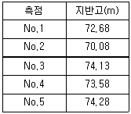
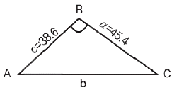
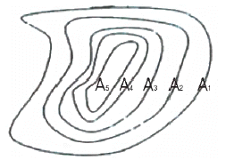
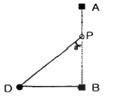
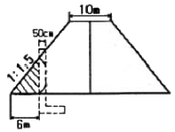
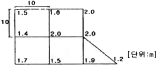
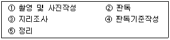
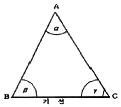
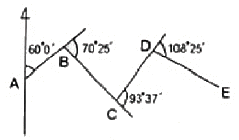

측량및지형공간정보산업기사 (2011-06-12 기출문제)
1과목: 응용측량
1. 도로중심선을 따라 20m간격의 종단측량을 하여 표와 같은 결과를 얻었다. 측점 No.1과 측점 No.5의 지반고를 연결하는 도로계획선을 설정한다면, 이 계획선의 도로 기울기는 얼마인가?

- 2%
- 1.6%
- +1.6%
- +2%
(정답률: 57%)

2. 다음 중 하천의 유량측정공식은? (단, Q=유량, A=단면적, V=유속, T=시간)
- Q=QVT
- Q=V/A
- Q=A/V
- Q=AV
(정답률: 67%)
3. 시설물의 계획 설계 시 경관상 검토되는 위치결정에 필요한 측량은?
- 공공측량
- 자원측량
- 공사측량
- 경관측량
(정답률: 82%)
4. 교각이 60°인 단곡선 설치에서 외할(E)가 20m라면 곡선 반지름(R)은 약 얼마인가?
- 112m
- 129m
- 132m
- 168m
(정답률: 59%)
5. 노선측량작업에서 종단측량에 관한 설명 중 옳지 않은 것은?
- 노선 중심선에 설치된 중심말뚝 및 추가점에 대한 지반고를 측량하는 것이다.
- 종단도면작성시 보통 수평축척을 수직축척보다 크게 잡는다.
- 종단측량의 정확도는 수준측량의 정확도를 기준으로 판단할 수 있다.
- 종단측량에 앞서 수준점을 노선근처에 설치하고 이를 기준으로 수준측량을 실시하는 것이 좋다.
(정답률: 77%)
6. 클로소이드 곡선에 대한 설명으로 틀린 것은?
- 클로소이드의 매개변수 A는 보통 m단위로 표시한다.
- 철(凸)형 클로소이드는 서로 다른 방향으로 구부러진 2개의 클로소이드 사이에 원곡선을 삽입한 형태이다.
- 클로소이드 곡선상에서 완화곡선장이 L인 지점에 있어서 곡률반지름이 R이면 완화곡선장이 L/2인 지점에 있어서 곡률반지름은 2R이다.
- 클로소이드 곡선은 모두 닮은 꼴의 형태이다.
(정답률: 48%)
7. 그림과 같이 2변의 길이가 각각 45.4m, 38.6m이고, ∠ABC가 118° 30´인 삼각형의 면적은?

- 780.94m2
- 770.04m2
- 248.13m2
- 245.35m2
(정답률: 75%)
8. 지하시설물 측량 방법 중 전자기파가 반사되는 성질을 이용하여 지중의 각종 현상을 밝히는 방법은?
- 전자유도 측량법
- 지중레이더 측량법
- 음파 측량법
- 자기관측법
(정답률: 82%)
9. 클로소이드 곡선의 매개변수(A)를 1.2배 늘리면 동일 곡선반지름에서 완화곡선길이는 몇 배가 되는가?
- 1.2
- 1.44
- 2.4
- 2.88
(정답률: 77%)
10. 20m 간격으로 등고선이 표시되어 있는 구릉지에서 구적기로 면적을 구한 값이 A5 = 200m2, A4 = 250m2, A3 = 600m2, A2 = 800m2, A1 = 1600m2일 때 토량은 얼마인가? (단, 각주공식을 이용할 것)

- 45,000m3
- 46,000m3
- 47,000m3
- 48,000m3
(정답률: 54%)
11. 깊이 100m, 지름 5m 정도의 수직 터널에서 터널 내외의 연결측량을 하고자 할 때 가장 적당한 방법은?
- 삼각법
- 트랜싯과 추선에 의한 방법
- 정렬법
- 사변형법
(정답률: 83%)
12. 면적측량에 대한 설명으로 틀린 것은?
- 삼사법에서는 삼각형의 밑변과 높이를 되도록 같게 하는 것이 이상적이다.
- 삼변법은 정삼각형에 가깝게 나누는 것이 이상적이다.
- 구적기는 불규칙한 형의 면적측정에 널리 이용된다.
- 심프슨 제2법칙은 사다리꼴 2개를 1조로 생각하여 면적을 계산한다.
(정답률: 84%)
13. 하천 횡단측량에서 그림과 같이 AB선상의 배 위에서 ∠a를 관측하였다. BP의 거리는 얼마인가? (단, AB⫠BD, BD=50.0m, a=40˚30´)

- 32.47m
- 38.02m
- 42.70m
- 58.54m
(정답률: 56%)
14. 하천측량시 거리표 설치에 대한 설명으로 옳지 않은 것은?
- 거리표는 하구 또는 하천의 합류점을 기점으로 한다.
- 하천중심의 유심선과 직각인 방향에 설치한다.
- 거리표는 횡단측량의 기준이 되며 횡단면도는 하천의 수리계산에 쓰인다.
- 거리표의 간격은 1km를 표준으로 한다.
(정답률: 47%)
15. 그림과 같이 도로를 계획하여 시공중 옹벽설치를 추가하였다. 빗금친 부분과 같은 옹벽바깥쪽의 단위길이당 토량은 얼마인가?

- 10m3
- 12m3
- 24m3
- 27m3
(정답률: 58%)
16. 하천측량에서 평균유속(Vm)을 구하는 방법 중 3점법은? (단, V2,V4,V6, V8은 수면으로부터 수심이 1/5, 2/5, 3/5, 4/5인 곳의 유속
- Vm = (V2+2V6+V8) / 4
- Vm = (V2+2V4+V8) / 3
- Vm = (V2+2V6+V8) / 3
- Vm = (V2+2V4+V8) / 4
(정답률: 67%)
17. 다음 중 터널 곡선의 곡선측설법으로 가장 적합한 방법은?
- 현편거법
- 지거법
- 중앙종거법
- 편각법
(정답률: 25%)
18. 하나의 터널을 완성하기 위해서는 계획·설계·시공 등의 작업과정을 거쳐야 한다. 다음 중 터널의 시공과정 중에 주로 이루어지는 측량은?
- 지형측량
- 터널 외 기준점 측량
- 세부측량
- 터널 내 측량
(정답률: 74%)
19. 그림과 같은 지역의 토공량은? (단, 분할된 격자의 가로, 세로 길이는 10m로 같다.)

- 787.5m3
- 880.5m3
- 970.5m3
- 952.5m3
(정답률: 58%)
20. 완화곡선의 성질에 대한 설명으로 틀린 것은?
- 완화곡선 반지름은 시점에서 무한대이다.
- 완화곡선에 연한 곡선반지름의 감소율은 캔트의 증가율과 같다.
- 완화곡선의 접선은 시점에서 직선에 접하고 종점에서는 원호에 접한다.
- 완화곡선 반지름은 종점에서 원곡선의 캔트와 같다.
(정답률: 43%)
2과목: 사진측량 및 원격탐사
21. 다음 중 정확도가 가장 높은 수치지도는?
- 30미터 크기의 해상도를 가진 인공위성 영상을 이용한 수치지도
- 1:1,000 축척의 항공사진을 가지고 수치도화를 거친 수치지도
- 1:50,000 축척의 종이지도를 디지타이징하여 만든 수치지도
- 1:25,000 축척의 종이지도를 스캐닝하여 만든 수치지도
(정답률: 74%)
22. 사진 내에서 축척의 변화가 없는 사진은?
- 경사사진
- 수직사진
- 수렴사진
- 정사사진
(정답률: 75%)
23. 항공사진측량에서 촬영비행기가 200km/h의 속도로 촬영할 경우, 사진축척이 1:30,000, 사진상의 허용 흔들림량이 0.02mm라면 최장노출시간은?
- 1/67초
- 1/77초
- 1/83초
- 1/93초
(정답률: 47%)
24. 지상기준점이 반드시 필요한 표정은?
- 내부표정
- 상호표정
- 접합표정
- 절대표정
(정답률: 55%)
25. 지형공간정보체계의 자료구조 중 벡터형 자료구조의 장점이 아닌 것은?
- 복잡한 지형의 묘사가 원활하다.
- 그래픽의 정확도가 높다.
- 그래픽과 관련된 속성정보의 추출 및 일반화, 갱신 등이 용이하다.
- 데이터베이스 구조가 단순하다.
(정답률: 77%)
26. 다음의 GIS 하드웨어 중 성격이 다른 것은?
- 모니터
- 프린터
- 필름기록기
- 스캐너
(정답률: 46%)
27. 수록된 데이터의 내용, 품질, 조건 및 특징 등을 저장한 데이터로서 데이터에 관한 데이터를 무엇이라 하는가?
- 헤더데이터
- 메타데이터
- 참조데이터
- 속성데이터
(정답률: 65%)
28. 다음 중 초분광(Hyperspectral) 영상에 대한 설명으로 옳은 것은?
- 영상의 밴드 폭이 1μm이하인 영상
- 분광파장범위를 극세분화 시켜 수백개까지의 밴드를 수집할 수 있는 영상
- 영상의 공간 해상도가 1m보다 좋은 영상
- 영상의 기록 bit 수가 10bit 이상인 영상
(정답률: 67%)
29. 언제 어디에서나 원하는 정보에 접근할 수 있는 기술이나 환경을 의미하는 것으로 최근 지리정보시스템 뿐만 아니라 여러 분야에서 이용되고 있는 신개념 정보화 환경은?
- 위치기반서비스(LBS)
- 유비쿼터스(ubiquitous)
- 텔레메틱스(telematics)
- 지능형교통체계(ITS)
(정답률: 50%)
30. 항공사진상에 나타난 굴뚝 정상의 시차가 8.00mm이고 굴뚝 하단의 시차가 7.98일 때 이 굴뚝의 높이는? (단, 촬영고도는 6,000m 이다.)
- 12m
- 15m
- 120m
- 150m
(정답률: 47%)
31. 도형자료와 속성자료를 활용한 통합분석에서 동일한 좌표계를 갖는 각각의 레이어정보를 합쳐서 다른 형태의 레이어로 표현되는 분석기능은?
- 공간추정
- 회귀분석
- 중첩
- 내삽과 외삽
(정답률: 77%)
32. 항공사진의 판독순서로 옳은 것은?

- ①→②→③→④→⑤
- ①→③→②→⑤→④
- ①→⑤→④→②→③
- ①→④→②→③→⑤
(정답률: 73%)
33. 수치지도로부터 수치지형모델(DTM)을 생성하려고 한다. 어떤 레이어가 필요한가?
- 건물 레이어
- 하천 레이어
- 도로 레이어
- 등고선 레이어
(정답률: 86%)
34. 축척 1:10,000으로 평탄한 토지를 촬영한 연직사진이 있다. 이 사진의 크기가 18cm×18cm, 종중복도가 60%라면 촬영기선장은 얼마인가?
- 520m
- 720m
- 920m
- 1120m
(정답률: 82%)
35. GIS 구성요소 중 하드웨어와 소프트웨어의 설명으로 잘못된 것은?
- 전통적인 GIS는 독립형 응용프로그램으로 개발되었으나, 오늘날의 GIS는 대개 컴퓨터의 클라이언트/서버모델을 사용한 네트워크 환경에서 실행되고 있다.
- 소프트웨어 구조는 객체관계형 모델(Object-Relational Model)에서 지리관계형 모델(Geo-Relational Model)로 바뀌고 있다.
- GIS 응용프로그램을 만들기 위해서 일반적인 컴퓨터 언어를 사용한 개념과 기술들은 소프트웨어 공학론(Software Engineering Methodology)에 기반을 둔 컴포턴트 소프트웨어를 토대로 하고 있다.
- 하드웨어는 GIS가 운영되는 기본 토대로서 크게 자료입력과 자료처리 및 관리, 자료출력의 세 부분으로 나누어 볼 수 있다.
(정답률: 62%)
36. 비행고도가 일정할 때에 보통각, 광각, 초광각의 세가지 카메라로서 사진을 찍을 때에 사진축척이 가장 작은 것은?
- 보통각 사진
- 광각 사진
- 초광각 사진
- 축척은 모두 같다.
(정답률: 65%)
37. 지형공간자료를 입력하는 단계로 옳게 나열된 것은?
- 비공간 속성자료의 입력→공간자료와 비공간자료의 연결→공간(위치)정보의 입력
- 공간자료와 비공간자료의 연결→공간(위치)정보의 입력→비공간 속성자료의 입력
- 공간(위치)정보의 입력→비공간 속성자료의 입력→공간자료와 비공간자료의 연결
- 공간(위치)정보의 입력→공간자료와 비공간자료의 연결→비공간 속성자료의 입력
(정답률: 70%)
38. 촬영고도 6000m, 초점거리 25cm의 사진기로 촬영한 항공사진에서 실면적 3km2는 얼마의 넓이로 나타나는가?
- 5.2cm2
- 52cm2
- 520cm2
- 5200cm2
(정답률: 40%)
39. 지형공간정보 체계의 자료에 대한 설명으로 옳지 않은 것은?
- 자료는 위치자료(도형자료)와 특성자료(속성자료)로 대별할 수 있다.
- 위치자료의 기반은 도면이나 지도와 같은 도형에서 위치의 값을 수록하는 정보의 파일이다.
- 일반적인 통계자료 또는 영상자료의 파일은 특성자료로 사용할 수 없다.
- 위치자료 기반과 특성자료 기반은 서로 연관성을 가지고 있어야 한다.
(정답률: 70%)
40. 지리정보시스템 자료구조의 일관성과 호환성 확보를 위해서는 데이터베이스 표준화가 필수이다. 지리정보데이터베이스 표준화에 필요한 내용과 거리가 먼 것은?
- 지리정보 레이어에 포함할 각 공간정보와 속성정보에 대한 지침의 정의
- 공간정보의 입출력 포맷과 속성정보에 대한 표현방식의 정의
- 사용목적에 적합한 기능이 포함된 프로그래밍 언어 및 소프트웨어의 정의
- 효과적인 데이터의 통합과 분석을 위해 데이터별 자료 분류체계와 코드의 정의
(정답률: 72%)
3과목: GIS 및 GPS
41. 수준측량의 주의사항에 대한 설명 중 옳지 않은 것은?
- 레벨은 가능한 두 점사이의 중간에 거리가 같도록 세운다.
- 표척을 전후로 기울여 관측할 때에는 최소 읽음값을 취하여야 한다.
- 수준점 측량을 위한 관측은 왕복 관측한다.
- 수준점간의편도관측의 측점수는 홀수로 한다.
(정답률: 42%)
42. 전파거리 측량기와 비교할 때 광파거리 측량기에 관한 설명으로 옳지 않은 것은?
- 정확도는 전파거리 측량기에 비해 다소 우수하다.
- 주로 중•단거리 측정용으로 사용된다.
- 안개나 구름의 영향을 거의 받지 않는다.
- 조작인원은 1명으로도 가능하다.
(정답률: 67%)
43. 위성에서 송출된 신호가 수신기에 하나 이상의 경로를 통해 수신될 때 발생하는 현상을 무엇이라 하는 가?
- 전리층 편의
- 대류권지연
- 다중정로
- 위성궤도 편의
(정답률: 65%)
44. 그림과 같은 삼각형의 변 길이를 구하기 위하여 log를 취하였을 때 AC의 거리를 구하는 식으로 옳은 것은?

- logAC = logsin α - log BC + log sinβ
- logAC = logsin α + log BC - log sinβ
- logAC = logsin β + log BC - logsin α
- logAC = logsin β - log BC + logsin α
(정답률: 70%)
45. 삼각점간의 평균거리가 약 5km인 삼각측량을 하였을 때 관측한 수평각의 허용 오차를 0.3" 까지 구한다면 관측점 및 시준점의 편심을 고려치 않아도 되는 허용한계는?
- 0.43cm
- 0.53cm
- 0.63cm
- 0.73cm
(정답률: 50%)
46. 각각의 GPS 위성에는 위성 고유의 식별자라고 할수 있는 코드를 가지고 있다. 이를 무엇이라 하는가?
- Pseudo Random Noise Code
- Dilution of Precision
- Differential GPS
- RTK
(정답률: 50%)
47. GPS 측량에 대한 설명으로 옳은 것은?
- GPS측량은 후처리방식과 실시간처리방식으로 구분되며, 실시간처리방식에는 정지측량, 신속정지측량, 이동측량이 포함된다.
- RlNEX는 GPS수신기의 기종에 관계없이 데이터의 호환이 가능하도록 하는 공용포맷의 일종이다.
- 다중경로(Multipath)는 GPS수신기에 다양한 신호를 유도하여 위치정확도를 향상시킨다.
- GPS 정지측량은 고정점의 수신기에서 라디오 모뎀에 의해 GPS데이터와 보정자료를 이동점 수신기로 전송하여 현장에서직접 측량성과를 획득하는 측량방법이다.
(정답률: 69%)
48. 삼변측랑에 대한설명으로 옳지 않은 것은?
- 삼변측량에서 변의 수가 증가함에 따라 많은 양의 보조기선 측량이 필요하다.
- 삼변측량은 삼각측량보다 많은 조건식이 성립되므로 높은 정확도를 확보할 수 있는 장점이 있다.
- 삼변측량에서는 변의 거리만을 관측하며 각은 계산에 의하여 구한다.
- 이론적으로 삼변망에서 가장 이상적인 도형은 모든 점에서 서로 관측이 가능한 오각형과 육각형이다.
(정답률: 54%)
49. 측량에 있어 부정오차가 일어날 가능성의 확률적 분포특성에 대한 설명으로 틀린 것은?
- 큰 오차가 생길 확률은 작은 오차가 생길 확률보다 매우 작다.
- 같은 크기의 양(+)오차와 음(-)오차가 생길 확률은 같다.
- 매우 큰 오차는 거의 생기지 않는다.
- 오차의 발생확률은 최소제곱법에 따른다.
(정답률: 50%)
50. 각측량에서 기계오차의 소거방법 중 망원경을 정반위로 관측하여도 제거되진 않는 오차는?
- 시준선과 수평축이 직교하지 않아 생기는 오차
- 수평축이 연직축에 직교하지 않아 생기는 오차
- 수평 기포관측이 연직축과 직교하지 않아 생기는 오차
- 시준선이 기계의 중심을 통과하지 않아 생기는 오차
(정답률: 60%)
51. 측량용 기계의 수평축에 대한 설명으로 옳은 것은?
- 연직축과 평행하다.
- 시준축과 평행하다.
- 망원경을 중앙에서 위, 아래로 회전시키는 축이다.
- 기포관의 중심 정점에 접하는 축이다.
(정답률: 45%)
52. 다음 중 GPS 위치결정방법에 대한 설명으로 옳은 것은?
- 반송파 위상관측법
- 초장기선 간섭계법
- 다중파장대 스캐너법
- 위성 레이저 거리측량법
(정답률: 43%)
53. 지성선 중 등고선과 직각으로 만나는 선이 아닌것은?
- 최대경사선
- 경사변환선
- 계곡선
- 분수선
(정답률: 70%)
54. 거리 200km를 직선으로 측정하였을 때 지구 곡률에 따른 오차는? (단, 지구의 반경은 6370km이다.)
- 14.43m
- 15.43m
- 16.43m
- 17.43m
(정답률: 28%)
55. 한 기선의 길이를 n회 반복 측정할 경우, 최확값의 평균제곱근오차에 대한 설명으로 옳은 것은?
- 관측횟수에 비례한다.
- 관측횟수의 제곱근에 비례한다.
- 관측횟수의 제곱근에 반비례한다.
- 관측횟수의 제곱에 반비례한다.
(정답률: 65%)
56. 그림과 같이 편각을 측정하였다면 DE의 방위각은? (단, AB의 방위각은 60° 이다.)

- 145° 13′
- 149° 13′
- 172° 32′
- 331° 13′
(정답률: 77%)
57. 수준측량시 중간점이 많을 경우 가장 적합한 야장기입법은?
- 기고식
- 고차식
- 승강식
- 교호식
(정답률: 54%)
58. 축척 1:50,000의 지형도에서 A점의 표고는 308m, B점의 표고는 346m일 때, A점으로 부터 표고 332m 등고선까지의 수평거리는? (단，AB는 등경사이며, 수평거리는 640m이다.)
- 384m
- 394m
- 404m
- 414m
(정답률: 44%)
59. 어느 측선의 길이가 200m 방위가 S30° W일 때 위거와 경거로 옳은 것은?
- 위거=173.2⑤m，경거=100.000m
- 위거=100.000m, 경거=173.2⑤m
- 위거 =-173.2⑤m，경거=-100.000m
- 위거=-100.000m, 경거=-173.2⑤m
(정답률: 62%)
60. 토탈스테이션의 구성요소와 관계가 없는 것은?
- 디지털 데오드라이트
- 엘리데이드
- 광파기
- 마이크로프로세서(컴퓨터)
(정답률: 47%)
4과목: 측량학
61. 측량기준점을 크게 3가지로 구분할 때 이에 속하지 않는 것은?
- 국가기준점
- 수로기준점
- 공공기준점
- 지적기준점
(정답률: 59%)
62. 지도의 주기(註記)원칙으로 틀린 것은?
- 자획이 복잡한 한자에 있어서는 알기 쉬운 약자로 표시할 수 있다.
- 문자의 크기 등에 관한 사항은 국토지리정보원장이 정한다.
- 사용되는 문자는 한글, 한자, 영자 및 아라비아숫자로서 한다.
- 한글, 한자는 고딕체를 사용한다.
(정답률: 36%)
63. 다음 중 트랜싯(데오드라이트)의 구조 ⁃ 기능 검사 항목이 아닌 것은?
- 연직축 및 수평축의 회전상태
- 수평각 및 연직각의 정확도
- 기포관의 부착 상태 및 기포의 정상적인 움직임
- 최소눈금
(정답률: 43%)
64. 측량기록의 정의로 옳은 것은?
- 당해 측량에서 얻은 최종결과
- 측량성과를 얻을 때까지의 측량에 관한 작업의 기록
- 측량을 끝내고 내업에서 얻은 최종결과의 심사기록
- 측량계획과 실시결과에 관한 공문 기록
(정답률: 79%)
65. 측량기술자가 아님에도 불구하고 측량·수로 조사및 지적에관한법률에서 정하는 측량(수로 측량 제외)을 한자에 대한 벌칙 기준으로 옳은 것은?
- 3년 이하의 징역 또는 3천만원 이하의 벌금
- 2년 이하의 징역 또는 2천만원 이하의 벌금
- 1년 이하의 징역 또는 1천만원 이하의 벌금
- 300만원 이하의 과태료
(정답률: 70%)
66. 일반측량실시의 기초가 될 수 있는 측량성과는?
- 일반측량성과
- 기본측량성과
- 지적측량성과
- 수로측량성과
(정답률: 58%)
67. 측량기준에 대한 설명으로 옳지 않은 것은?
- 위치는 세계측지계에 따라 측정한 지리학적 경위도와 높이(평균해수면으로부터의 높이를 말한다.)로 표시한다. 다만, 지도제작 등을 위하여 필요한 경우에는 직각좌표와 높이, 극좌표와 높이, 지구중심 직교좌표 및 그 밖의 다른 좌표로 표시할 수 있다.
- 측량의 원점은 대한민국 경위도원점 및 수준원점으로 한다. 다만, 섬 등 대통령령으로 정하는 지역에 대하여는 국토해양부장관이 따로 정하여 고시하는 원점을 사용할 수 있다.
- 해안선은 해수면이 약최고고조면(일정 기간 조석을 관측하여 분석한 결과 가장 높은 해수면)에 이르렀을 때의 육지와 해수면과의 경계로 표시한다.
- 세계측지계, 측량이 원점 값의 결정 및 직각좌표의 기준 등에 필요한 사항은 국토해양부령으로 정한다.
(정답률: 62%)
68. 일반측량을 한 자에게 그 측량성과 및 측량기록의 사본을 제출하게 할 수 있는 경우(목적)에 해당하지 않는 것은?
- 측량의 정확도 확보
- 측량의 중복 배제
- 측량의 관한 자료의 수집·분석
- 측량기술자 관리
(정답률: 74%)
69. 기본측량성과의 국외반출금지의 예외조항으로 “외국정부와 기본측량성과를 서로 교환하는 등 대통령령으로 정하는 경우” 에 해당되지 않는 것은?
- 정부를 대표하여 외국 정부와 교섭하거나 국제회의 또는 국제기구에 참석하는 자가 자료로 사용하기 위하여 지도나 그 밖에 필요한 간행물 또는 측량용 사진을 반출하는 경우
- 관광객 유치와 관광시설 홍보를 목적으로 지도나 그 밖에 필요한 간행물 또는 측량용 사진을 제작하여 반출하는 경우
- 축척 1:50,000 미만인 소축척의 수치지형도를 국외로 반출하는 경우
- 축척 1:25,000 또는 1;50,000 지도로서 국가정보원장의 지원을 받아 보안성 검토를 거친 경우(등고선, 발전소, 가스관 등 국토해양부장관의 정하여 고시하는 시설 등이 표시 되지 아니한 경우로 한정한다.)
(정답률: 75%)
70. 기존의 "측량법", "지적법" 및 "수로업무법" 을 통합하여 시행되는 법의 명칭은?
- 통합측량법
- 측량·수로조사및지적에 관한 법률
- 국가공간정보에 관한법률
- 공간정보산업진흥법
(정답률: 50%)
71. 기본측량성과의 고시 및 보관은 원칙적으로 누가 하여야 하는가?
- 국토해양부장관
- 지방국토관리청장
- 시·도지사
- 대한측량협회장
(정답률: 20%)
72. 공공측량 실시에 대한 설명 중 옳지 않은 것은?
- 공공측량은 기본측량성과나 다른 공공측량성과를 기초로 실시하여야 한다.
- 공공측량시행자는 공공측량을 하려면 미리 공공측량작업계획서를 제출하여야 한다.
- 지방국토관리청장은 공공측량의 정확도를 높이거나 측량의 중복을 피하기 위하여 필요하다고 인정하면 공공측량시행자에게 공공측량에 관한 장기계획서 또는 연간계획서의 제출을 요구할 수 있다.
- 공공측량시행자는 공공측량을 하려면 미리 측량지역, 측량기간, 그 밖에 필요한 사항을 시·도지사에게 통지하여야 한다.
(정답률: 62%)
73. 공공측량성과 또는 공공측량기록을 복제하거나 사본을 받으려는 경우 누구에게 신청하여야 하는가?
- 공공측량시행자
- 측량성과심사수탁기관
- 지방국토관리청장
- 시·도지사
(정답률: 39%)
74. 다음 중 공공측량에 관한 설명으로 가장 적합 한 것은?
- 토지를 지적공부에 등록하거나 지적공부에 등록된 경계점을 지상에 복원하기 위한 측량
- 모든 측량의 기초가 되는 공간정보를 제공하기 위하여 국토해양부장관이 실시하는 측량
- 공공의 이해 또는 안전과 밀접한 관련이 있는 측량으로서 대통령령으로 정하는 측량
- 순수 학술연구나 군사활동을 위한 측량
(정답률: 60%)
75. 기본측량에 대한 설명으로 잘못된 것은?
- 기본측량의 방법 및 절차 등에 필요한 사항은 대통령령으로 정한다.
- 모든 측량의 기초가 되는 공간정보를 제공하기 위한 측량이다.
- 원칙적으로 국토해양부장관이 실시한다.
- 공공측량의 기준이 된다.
(정답률: 42%)
76. 다음 중 측량업의 등록을 취소하는 경우에 해당되지 않는 것은?
- 정당한 사유없이 측량업 등록 후 6개월 휴업한 경우
- 고의 또는 과실로 측량을 부정확하게 한 경우
- 측량업등록증 또는 측량업등록수첩을 빌려주어 측량업무를 하게 한 경우
- 영업정지기간 중 계속하여 영업을 한 경우
(정답률: 50%)
77. "성능검사를 부정하게 한 성능검사대행자"에 대한 벌칙은?
- 1년 이하의 징역 또는 1천만원 이하의 벌금
- 2년 이하의 징역 또는 2천만원 이하의 벌금
- 3년 이하의 징역 또는 3천만원 이하의 벌금
- 5년 이하의 징역 또는 5천만원 이하의 벌금
(정답률: 67%)
78. 측량업 등록의 결격 사유에 해당되는 것은?
- 금고 이상의 실형을 선고받고 그 집행이 끝난 날로부터 3년이 경과한 자
- 금치산자 또는 한정치산자
- 금고 이상의 형의 집행유예를 받고 그 집행유예기간이 끝난 날로부터 1년이 경과한 자
- 측량업의 등록이 취소된 후 3년이 경과한 자
(정답률: 62%)
79. 지형도 상의 표시 사항 중 바다에서의 수애선 표시기준으로 옳은 것은?
- 간조시의수위
- 만조시의수위
- 평균 해수면이 수위
- 측량당시의 수위
(정답률: 32%)
80. 측량기술자의 의무에 대한 설명으로 잘못된 것은?
- 측량기술자는 신의와 성실로써 공정하게 측량을 하여야 하며, 정당한 사유 없이 측량을 거부하여서는 아니 된다.
- 측량에 관한 자료의 수집 및 분석을 하여야 한다.
- 측량기술자는 둘 이상의 측량업자에게 소속 될 수 없다.
- 측량기술자는 다른 사람에게 측량기술경력증을 빌려주거나 자기의 성명을 사용하여 측량업무를 수행하게 하여서는 아니 된다.
(정답률: 60%)